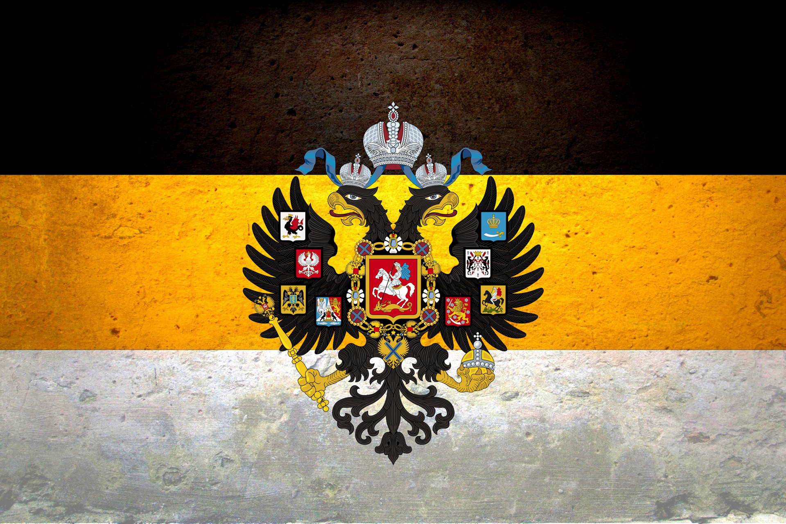
ФИО участников заговора:
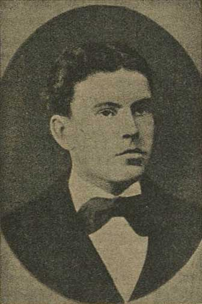
- Роль: Бросил вторую бомбу, смертельно ранившую императора.
- Место: Стоял у решетки Екатерининского канала (канал Грибоедова).
- Действия: Когда Александр II подошёл ближе, Гриневицкий бросил бомбу под ноги царю. Взрывом императору оторвало ноги, а сам террорист получил смертельные ранения и умер в тот же день.
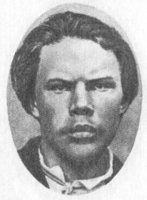
- Роль: Бросил первую бомбу, но она лишь ранила охрану.
- Место: Находился на набережной Екатерининского канала.
- Действия: Бросил снаряд в царскую карету, но Александр II не пострадал. После взрыва был схвачен казаками и городовыми.
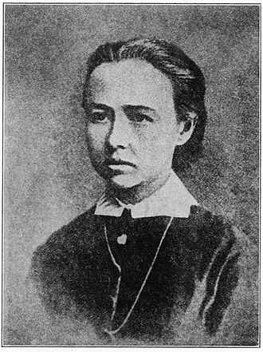
- Роль: Организатор и координатор покушения.
- Место: Находилась на противоположном берегу канала, подавала сигналы (платком) о приближении царя.
- Действия: Контролировала процесс, давала знаки бомбометателям, когда нужно атаковать.
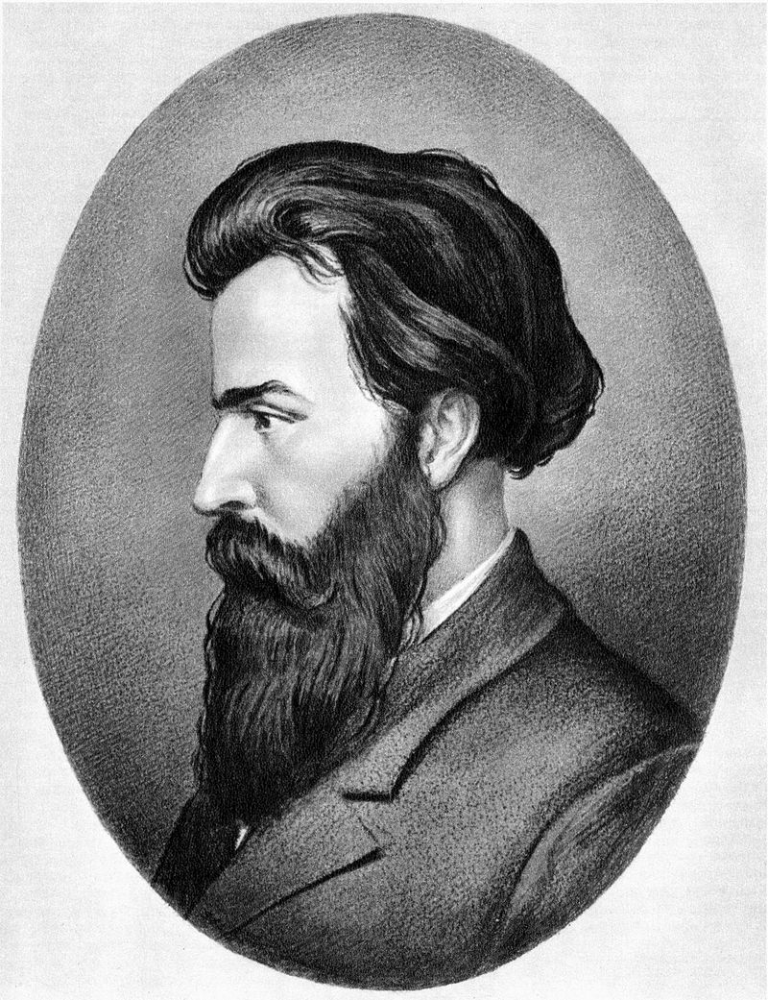
- Роль: Главный организатор покушения.
- Где был: Арестован за 2 дня до убийства (27 февраля), но его планы были уже приведены в действие.
- Действия: Разработал операцию, подобрал исполнителей, но сам не участвовал непосредственно в нападении.
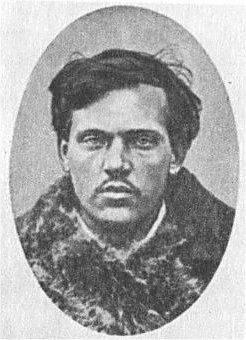
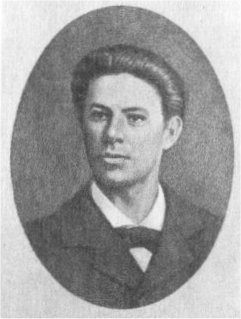
Запасные метальщики:
- Михайлов Тимофей Михайлович – стоял в резерве, но не бросил бомбу.
- Емельянов Иван Пантелеймонович – также был на месте,но не участвовал в атаке.
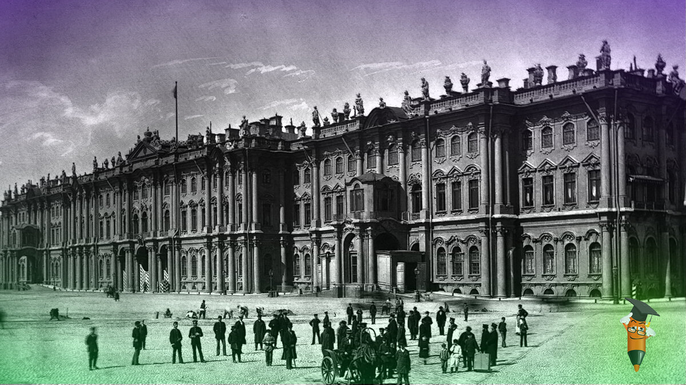
1 марта 1881 года, 12:45
Александр II выехал из Зимнего дворца в Михайловский манеж для участия в разводе караулов. Это было его обычное воскресное мероприятие.
Интересный факт: в этот день император отменил утренний прием министра внутренних дел Лорис-Меликова, где должен был обсуждаться проект конституции.
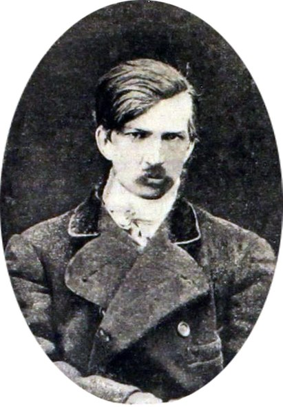
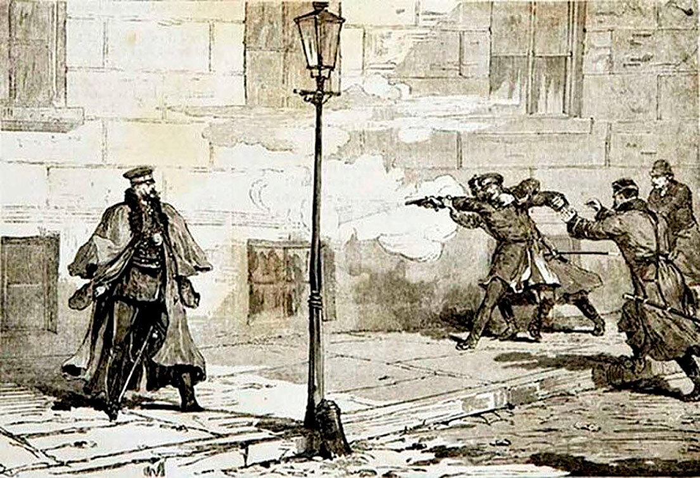
2 апреля 1879 года
Александр Соловьёв, член "Земли и воли", совершил первое из шести покушений на Александра II, выпустив пять пуль из револьвера.
Император уцелел благодаря зигзагообразному бегу. Этот эпизод заставил его сократить публичные выходы и усилить охрану.
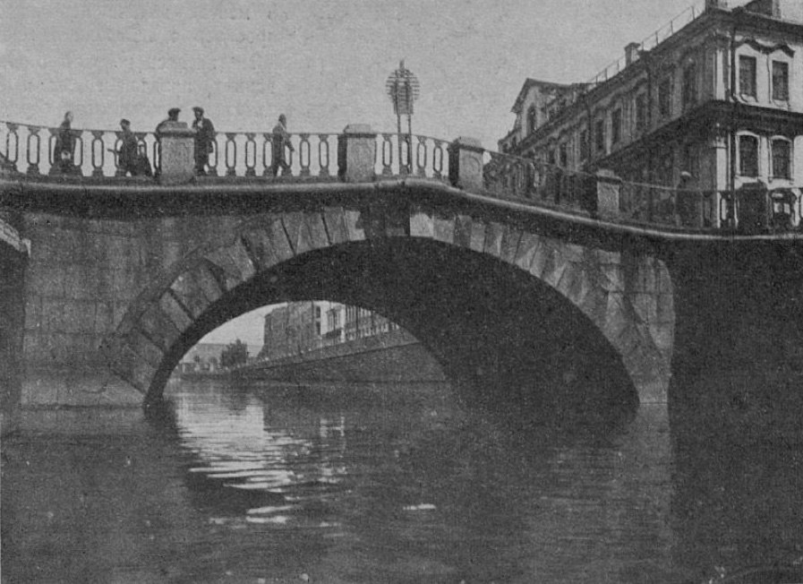
Лето 1880 года
Желябов разработал план подрыва моста при проезде царского кортежа. Под мост были опущены:
План отменили из-за изменения маршрута императора.
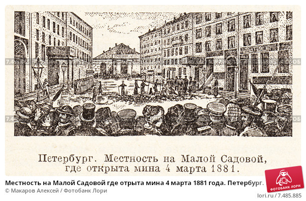
Ноябрь 1880 - февраль 1881
Заложено 96 кг динамита с электродетонатором. Взрывное устройство так и не было использовано - царь изменил маршрут.
Интересно: Хозяйка лавки позже свидетельствовала, что "купцы" интересовались только подвалом.
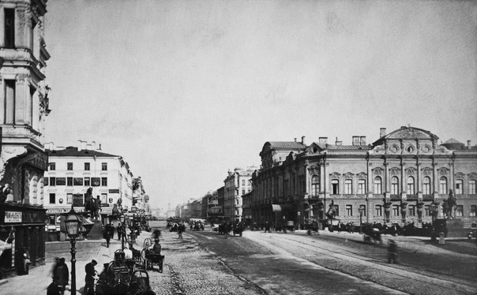
Утро 1 марта 1881
По данным наблюдений Перовской, император обычно следовал в Манеж:
В этот день кучер получил приказ ехать через Певческий мост - это сорвало первоначальный план террористов.
Деталь: На Невском дежурил метальщик Тимофей Михайлов с запасной бомбой.
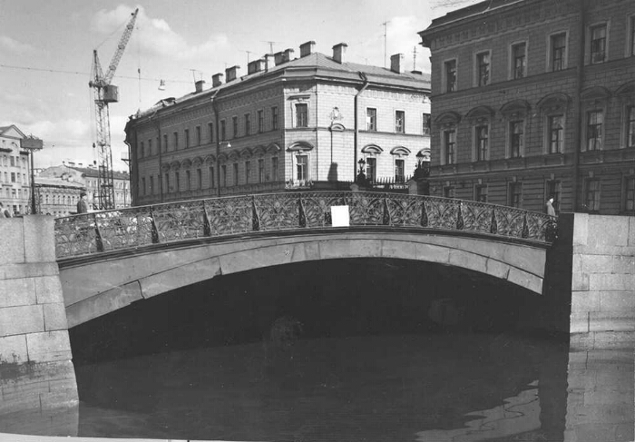
13:10, 1 марта
Причины изменения маршрута:
Это решение:
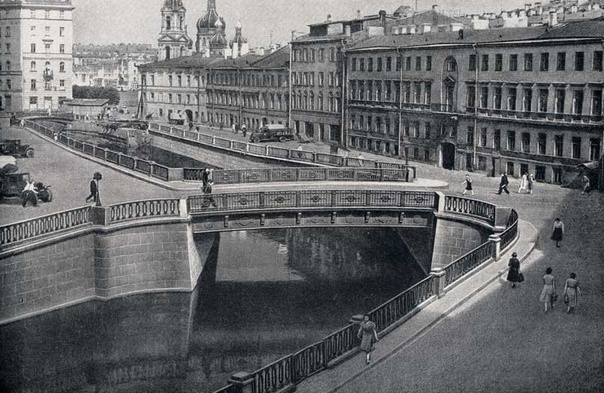
13:15, 1 марта
Критическая точка маршрута:
| Фактор | Значение |
|---|---|
| Ширина моста | Всего 18 м |
| Скорость кортежа | Не более 10 км/ч |
| Дистанция до воды | 3.5 м |
Именно здесь Перовская впервые увидела царскую карету и начала подавать сигналы.
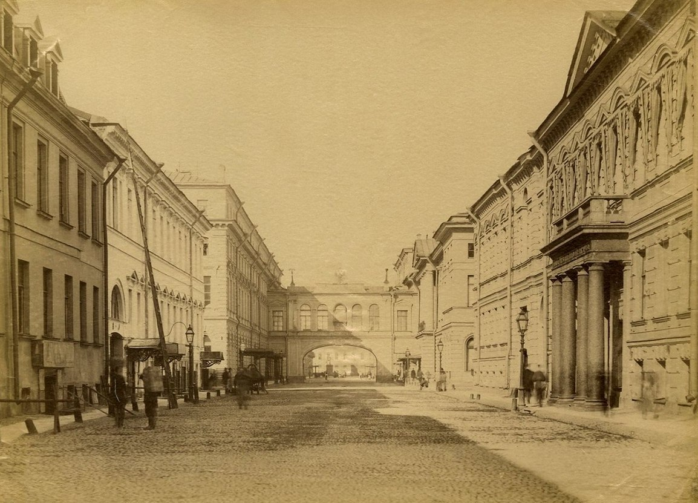
13:20, 1 марта
Карета замедлилась до 5 км/ч, что сделало её идеальной мишенью.
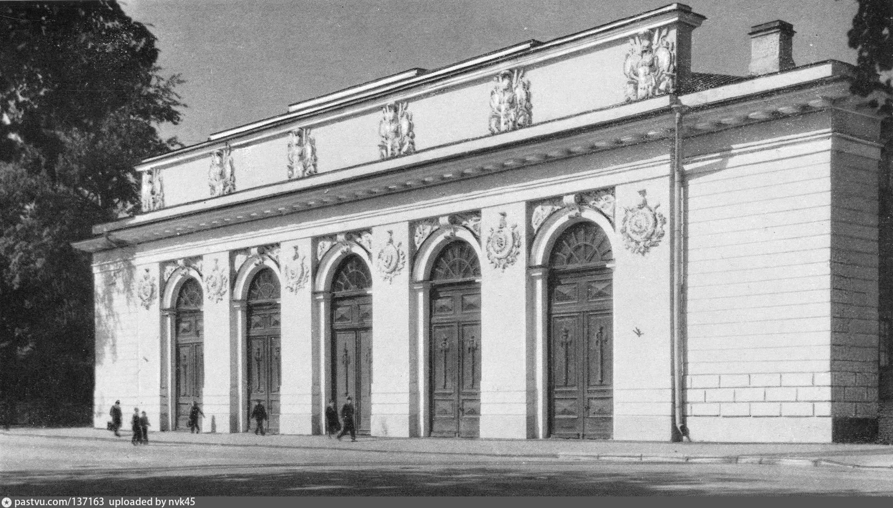
13:30-14:00, 1 марта
В это время:
Важно: После манежа император решил заехать к кузине, что изменило обратный маршрут.
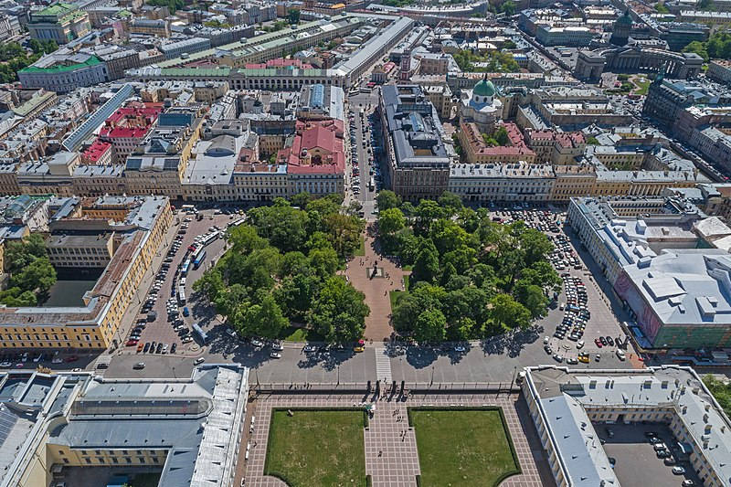
14:05, 1 марта
Особенности местности:
Именно здесь Рысаков впервые увидел приближающуюся карету.
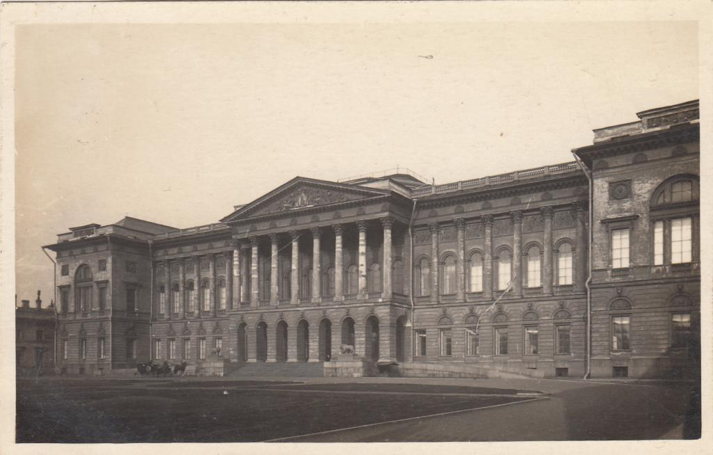
14:00-14:10, 1 марта
Детали визита:
Этот неожиданный визит дал террористам время занять новые позиции.
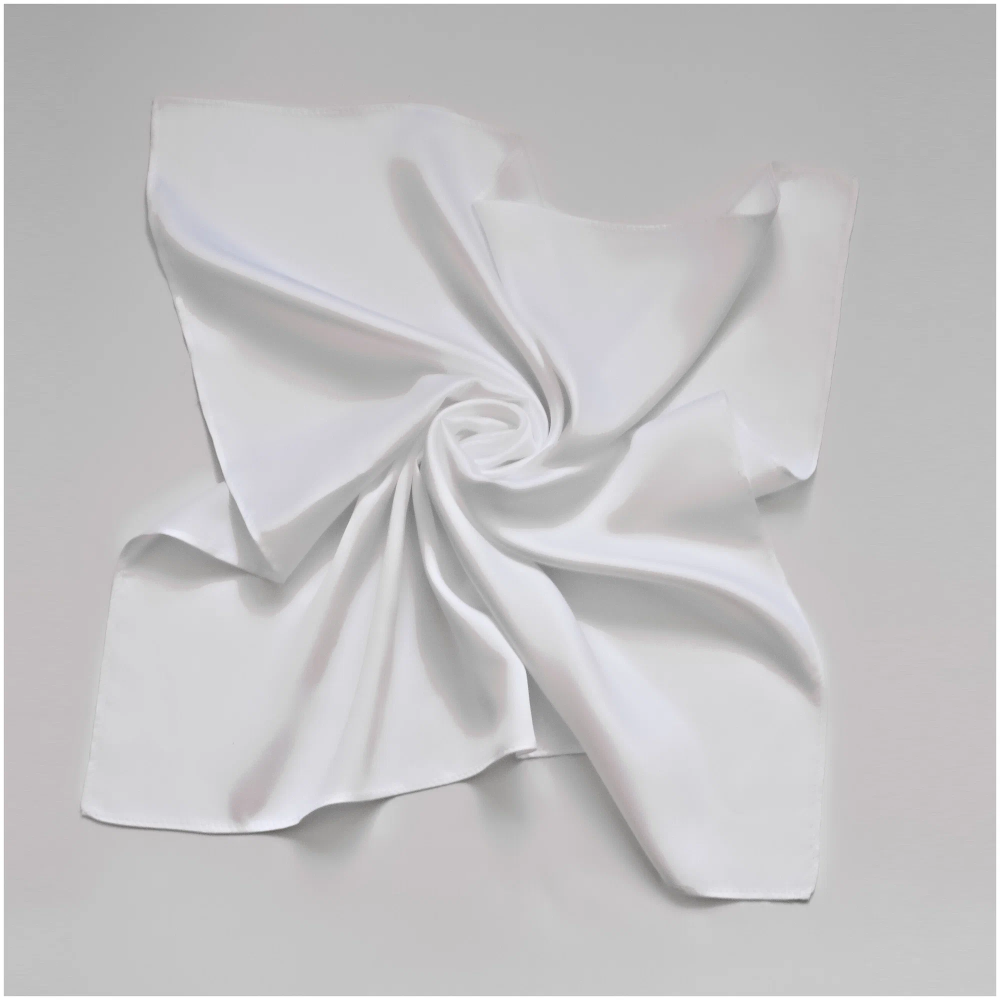
14:05-14:10, 1 марта
Действия Перовской:
Всего на набережной заняли позиции 4 бомбометателя.
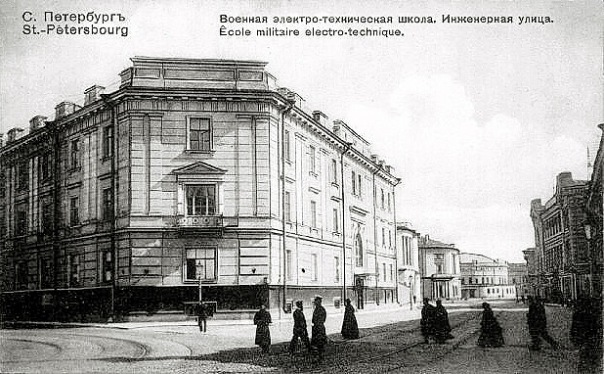
14:12, 1 марта
Параметры движения:
| Параметр | Значение |
|---|---|
| Скорость | 7 км/ч |
| Дистанция до цели | 280 м |
| Состав охраны | 6 казаков, 2 полицейских |
Карета двигалась так медленно из-за повреждений от первой бомбы.
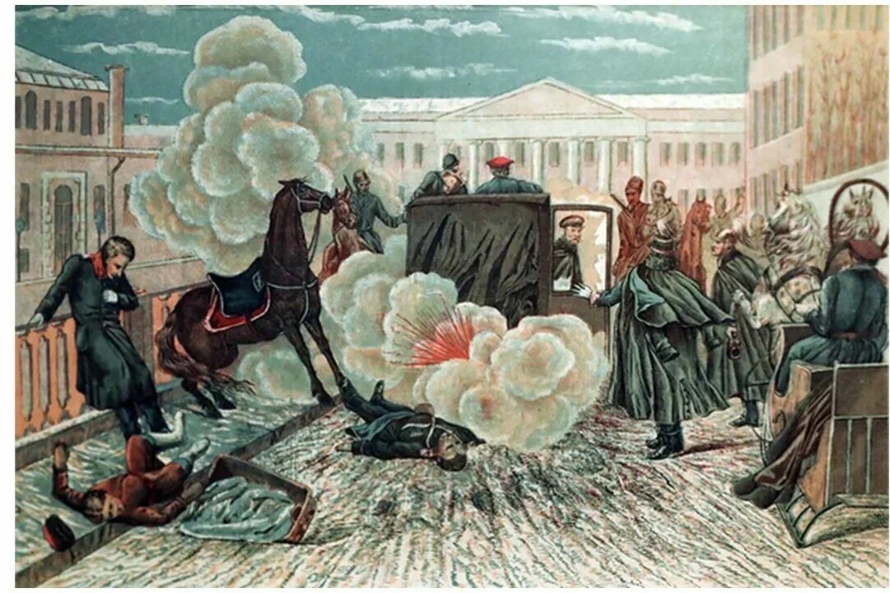
14:15, 1 марта 1881 года
Смерть наступила в 15:35 в Зимнем дворце. Последние слова: "Во дворец... Там умереть..."
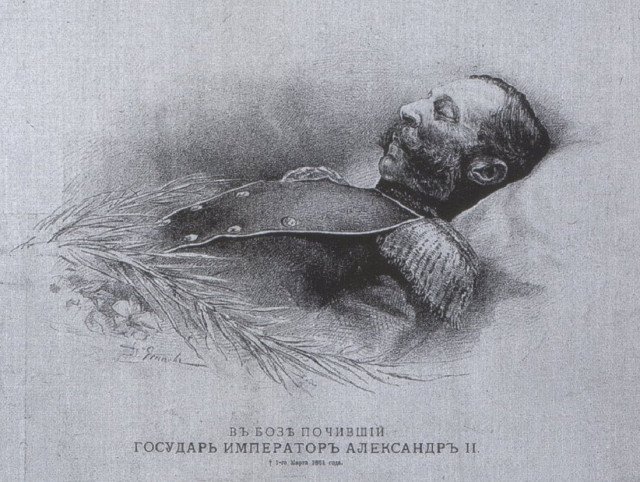
14:30-15:35, 1 марта
Причины смерти:
Официальное время смерти: 15:35 по дворцовым часам.